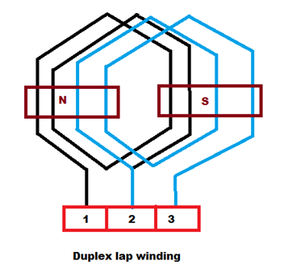
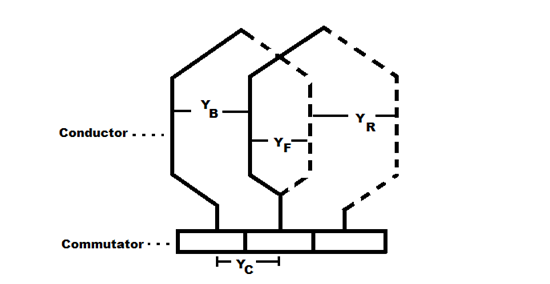
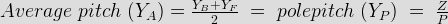
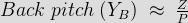

Armature windings are mainly of two types – lap winding and wave winding. Here we are going to discuss about lap winding.
Lap winding is the winding in which successive coils overlap each other. It is named "Lap" winding because it doubles or laps back with its succeeding coils.

In this winding the finishing end of one coil is connected to one commutator segment and the starting end of the next coil situated under the same pole and connected with same commutator segment.
Here we can see in picture, the finishing end of coil - 1 and starting end of coil - 2 are both connected to the commutator segment - 2 and both coils are under the same magnetic pole that is N pole here.
Simplex Lap Winding
A winding in which the number of parallel path between the brushes is equal to the number of poles is called simplex lap winding.
Duplex Lap Winding
A winding in which the number of parallel path between the brushes is twice the number of poles is called duplex lap winding.

Some important points to remember while designing the Lap winding:
If, Z = the number conductors
P = number of poles
YB = Back pitch
YF = Front pitch
YC = Commutator pitch
YA = Average pole pitch
YP = Pole pitch
YR = Resultant pitch

Then, the back and front pitches are of opposite sign and they cannot be equal.
YB = YF ± 2m
m = multiplicity of the winding.
m = 1 for Simplex Lap winding
m = 2 for Duplex Lap winding
When,
YB > YF, it is called progressive winding.
YB < YF , it is called retrogressive winding.
Back pitch and front pitch must be odd.
Resultant pitch (YR) = YB - YF = 2m
YR is even because it is the difference between two odd numbers.


Commutator pitch (YC) = ±m
Number of parallel path in the Lap winding = mP
Let us start from 1st conductor,
| Back connections | Front connections |
|---|---|
| 1 to (1+YB)=(1+5)=6 | 6 to (6-YF)=(6-3)=3 |
| 3 to (3+5)=8 | 8 to (8-3)=5 |
| 5to (5+5)=10 | 10 to (10-3)=7 |
| 7 to (7+5)=12 | 12 t0 (12-3)=9 |
| 9 to (9+5)=14 | 14 to (14-3)=11 |
| 11 to (11+5))=16 | 16 to (16-3)=13 |
| 13 to (13+5)=18=(18-16)=2 | 2 to (18-3)=15 |
| 15 to (15+5)=20=(20-16)=4 | 4 to(20-3)=17=(17-16)=1 |
Advantages of Lap Winding
1. This winding is necessarily required for large electric current application because it has more parallel paths.
2. It is suitable for low voltage and high electric current generators.
Disadvantages of Lap Winding
1. It gives less emf compared to wave winding. This winding is required more no. of conductors for giving the same emf, it results high winding cost.
2. It has less efficient utilization of space in the armature slots.
 by
by {kind=link}
{kind=link}
{kind=link}
{kind=link}
{kind=link}